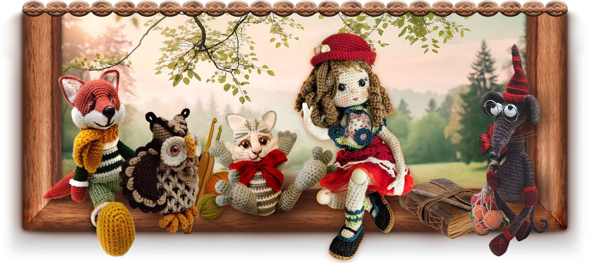
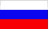

🎀 НИТОЧКИ ВООБРАЖЕНИЯ 🎀
🌟О нашем сайте 🌟
🧶 Сказки из клубочка — это уютный островок в бескрайнем интернете, где рождаются чудеса. Здесь истории не просто читают — их создают вместе. Это пространство, где бабушкины сказки встречаются с детскими рисунками, а обычный моток пряжи превращается в верного друга. Мы верим, что через общее творчество, вязание и добрые размышления поколения становятся ближе, а сердца — теплее.

🧸 Сердце нашего мира — игрушки амигуруми. Наши маленькие вязаные герои — не просто игрушки. У каждого свой непоседливый характер, свои мечты и целая жизнь, описанная в авторских сказках. Они оживают под пальцами, чтобы приносить в ваш дом свет и вдохновение.
🎨 Станьте соавтором магии! Нам важно, чтобы юный читатель был не просто зрителем. Нарисуйте сцену из истории, придумайте новое приключение для Лисенка или свяжите своего собственного героя. Ведь самая лучшая сказка — та, что создана своими руками.
🌿 Зашли ли вы, чтобы связать свою первую петельку, послушать тихий рассказ или просто отдохнуть душой там, где пряжа становится магией — мы искренне рады вам!
🗺️ Путеводная нить (Навигация)
Верхнее меню поможет вам не заблудиться: загляните в Сказки, познакомьтесь с Персонажами, зайдите в Школу Вязания или выберите Мастер-класс. Мы бережно растим наш проект: сочиняем новые главы, приглашаем новых героев и украшаем наш общий дом, чтобы вам здесь было спокойно и радостно.
📖 Рассказы, рожденные из пряжи:
загляните в раздел историй, написанных с нежностью и заботой. Для вашего удобства сказки разделены на главы — их так приятно читать вместе перед сном, выполняя маленькие игровые задания.
🦊 Галерея друзей:
познакомьтесь поближе с каждым жителем нашего мира. Узнайте, что любит мудрая Сова или о чем грустит лесной Гриб. Каждого из них вы сможете пригласить к себе домой, создав его по нашим описаниям.
🦉 Школа совы Софии:
бережное руководство для тех, кто только берет в руки крючок. София научит основам даже самых маленьких (9-10 лет) и поможет взрослым вспомнить радость ручного труда. Наши схемы — это ключи к оживлению любимых героев.
🧶 Мастерская творчества:
🔶 Первые шаги — крохотные проекты для детей (30–45 минут), чтобы радость результата была мгновенной.
🔶 Творческий поиск — бесплатные уроки по созданию добрых сказочных героев.
🔶 Путь мастера — детальные, проработанные мастер-классы. Это идеальный подарок, который объединит поколения: бабушка свяжет, а внук подарит имя и жизнь новой игрушке.
🎀 Идеи для общей радости:👩👧👦
советы, как провести вечер вместе, создавая что-то теплое и настоящее.
✉️ Если захотите поделиться своей историей или задать вопрос — загляните на страницу «Контакты».
🌍 Мы в социальных сетях:
🔶 На русском языке:
 ВКонтакте,
Одноклассники, и
ВКонтакте,
Одноклассники, и
 RuTube
RuTube
🔶 На английском языке:
 Facebook,
Facebook,
 Instagram,
Instagram,
 Pinterest,
Pinterest,
 YouTube, and
Reddit.
YouTube, and
Reddit.
🌐 Наш мир говорит на